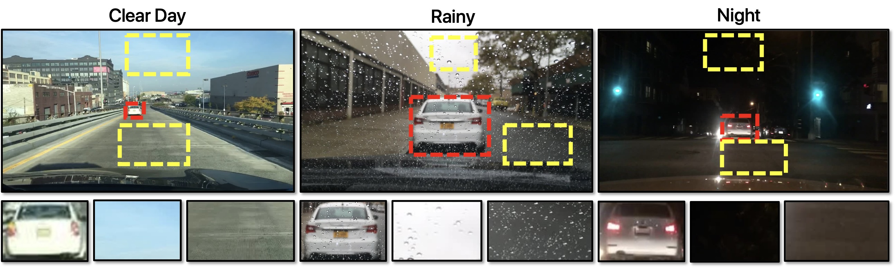
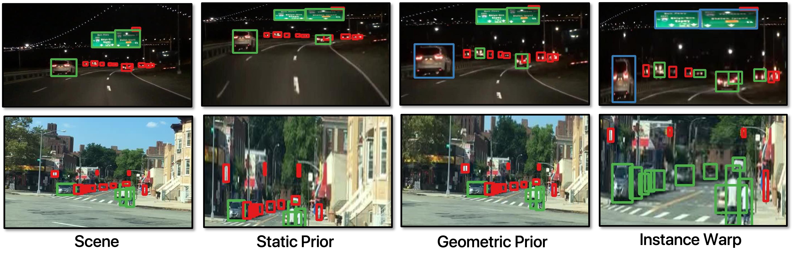
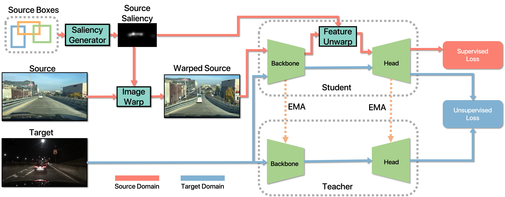
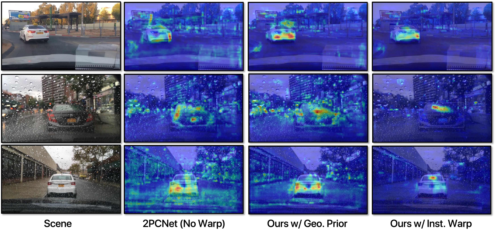
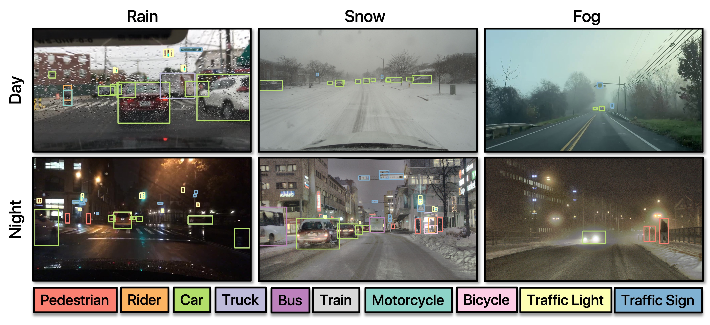
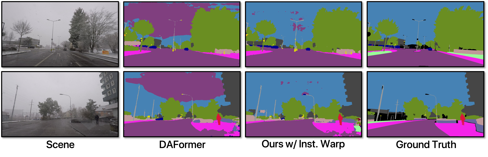

Our adapted detection results on in-the-wild driving videos taken in bad weather.
We oversample salient object regions by warping source-domain images in-place during training while performing domain adaptation.
Our approach improves adaptation across geographies, lighting and weather conditions, is agnostic to the task, domain adaptation algorithm, saliency guidance, and underlying model architecture. Our approach adds minimal memory during training and incurs no additional latency at inference time.
Highlights include:
Domain adaptation methods often treat background and object regions uniformly. However, backgrounds occupy more pixels and exhibit larger cross-domain variations, making them challenging to learn.

Focusing on salient object-containing regions while reducing attention to background context can lead to more robust and adaptable recognition models.
A warping guidance, specifically a saliency-based approach to oversample certain regions over others, is essential for oversampling image regions. We propose instance-level saliency guidance, which explicitly oversamples all objects during training. We could have used Static Prior Guidance [Thavamani 2021, Thavamani 2023] or Geometric Prior Guidance [Ghosh 2023], However, these methods are not designed for domain adaptation and do not explicitly oversample object instance regions, which has proven to be the most effective approach.
Our warping focus on oversampling object regions and undersampling background regions. We warp source images based on saliency guidance and then unwarp the backbone features using the same guidance before making predictions. This method can be seamlessly integrated into existing domain adaptation algorithms and is agnostic to the task, domain adaptation algorithm, saliency guidance, and underlying model architecture. Empirically, we observed that warping source domain images is more effective than warping both source and target domain images. We do not warp or unwarp at test time.
Grad-CAM visualization shows that the model trained with our method demonstrate a higher focus on salient objects, indicating better-learned features and improved scene comprehension.
As the learned backbone features are better, our approach improves performance across various real-to-real domain adaptation tasks, including changing weather, lighting conditions, and geographies. The results below are from an adapted model pre-trained on BDD100K images taken during the day and in good weather conditions.
Our method is agnostic to tasks, adaptation algorithms, and backbone architectures. It seamlessly applied to object detection and semantic segmentation, using either ConvNet or Transformer backbones.
